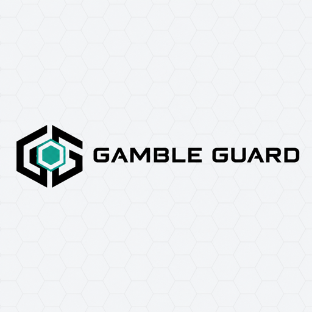

Congratulations, you will never gamble again.
Checking this device…
Protected. Gambling sites do not load on this device.
Not protected on this device yet
Gambling sites still load here. Install it now.
iPhone or iPad
- Download the profile, then open Settings → Profile Downloaded → Install.
- Turn iCloud Private Relay off: Settings → your name → iCloud → Private Relay. Safari then uses the filter.
Android
- Settings → Network & internet → Private DNS → Private DNS provider hostname →
family.dns.mullvad.net→ Save.
Mac
- Open Terminal (press ⌘ Space and type Terminal), paste this and press Return. It asks for your password.
curl -fsSL https://raw.githubusercontent.com/prime-server/gamble-guard/main/install.sh | sudo bash - Turn iCloud Private Relay off: System Settings → Apple Account → iCloud → Private Relay. Safari then uses the filter.
Windows
- Right-click Start → Terminal (Admin), paste this and press Enter.
irm https://raw.githubusercontent.com/prime-server/gamble-guard/main/win/install.ps1 | iex
Could not check: this device looks offline.
Reconnect and reload this page.
What is now true
- Filtering DNS. Every lookup from this device goes to a resolver that refuses gambling domains.
- Hosts block. Every gambling domain on the list points at 0.0.0.0, in every app and every browser. The list refreshes itself weekly.
- Browsers locked. Chrome, Edge, Brave and Firefox are pinned to the system resolver, so they cannot look up a gambling site on their own.
- Two watchdogs. Two services re-apply all of this every two minutes and put each other back if one is removed.
- No uninstall. There is no command to remove it. It stays.
Two things to do now
- On a Mac, iPhone or iPad, turn iCloud Private Relay off (Settings → Apple Account → iCloud → Private Relay) so Safari uses the filter.
- To make removal impossible even for yourself, run
sudo ./harden.shfrom the repo folder.